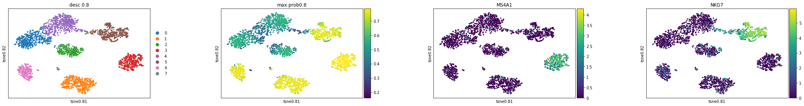
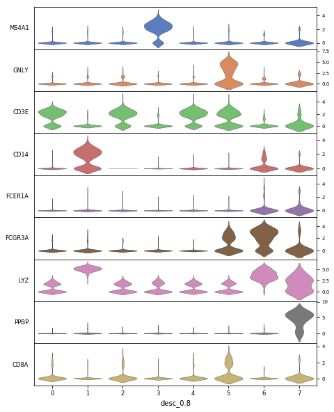

In this tutorial, we will perform an entire desc analysis using a dataset of Peripheral Blood Mononuclear Cells (PBMC). In the dataset, the expression levels of 2,700 cells were sequenced using the Illumina NextSeq 500. The data are freely available from 10X Genomics and the raw data can be downloaded here.
0 Import python modules
We need to import the desc module for clustering analysis and scanpy for data preprocessing.
import desc as DESC
import numpy as np
import pandas as pd
import scanpy.api as sc
import matplotlib
import numpy as np
import matplotlib.pyplot as plt
%matplotlib inline
sc.settings.verbosity = 3 # verbosity: errors (0), warnings (1), info (2), hints (3)
sc.logging.print_versions()
1 Import data
The current version of desc works with an AnnData object. AnnData stores a data matrix .X together with annotations of observations .obs, variables .var and unstructured annotations .uns. The desc package provides 3 ways to prepare an AnnData object for the following analysis.
1.1 Start from a 10X dataset
The desc package provides a function to load the 10X dataset directly. Download the data and unzip it. Then put everything in filtered_gene_bc_matrices/hg19/ to data/pbmc/.
# load the 10X data by providing the path of the data
adata = desc.read_10X(data_path='data/pbmc')
1.2 Start from *.mtx and *.tsv files
When the expression data do not follow the standard 10X dataset format, we can manually import the data as follows.
1). Read the expression matrix from *.mtx file.
import pandas as pd
adata = desc.utilities.read_mtx('data/pbmc/matrix.mtx').T
2). Read the *.tsv file for gene annotations. Make sure the gene names are unique.
genes = pd.read_csv('data/pbmc/genes.tsv', header=None, sep='\t')
adata.var['gene_ids'] = genes[0].values
adata.var['gene_symbols'] = genes[1].values
adata.var_names = adata.var['gene_symbols']
# Make sure the gene names are unique
adata.var_names_make_unique(join="-")
3). Read the *.tsv file for cell annotations. Make sure the cell names are unique.
cells = pd.read_csv('data/pbmc/barcodes.tsv', header=None, sep='\t')
adata.obs['barcode'] = cells[0].values
adata.obs_names = cells[0]
# Make sure the cell names are unique
adata.obs_names_make_unique(join="-")
1.3 Start from a *.h5ad file
We can also load a previously saved an AnnData object:
adata = desc.read_h5ad('data/pbmc.h5ad')
For more ways to create AnnData objects, please check here
2 Preprocessing
The standard scRNA-seq data preprocessing workflow includes filtering of cells/genes, normalization, scaling and selection of highly variables genes. In this tutorial, we use scanpy to preprocess the data. Note that among the preprocessing steps, filtration of cells/genes and selecting highly variable genes are optional, but normalization and scaling are strictly required before the desc analysis.
The following steps show a typical preprocessing procedure for analyzing the PBMC data.
2.1 Filtering cells and genes
Typing adata in the python console shows that the original dataset contains expression values for 2700 cells across 32738 genes.
>>> adata
AnnData object with n_obs × n_vars = 2700 × 32738
obs: 'barcode', 'n_genes'
var: 'gene_ids', 'gene_symbols', 'n_cells'
Let us remove cells with very few expressed genes, as well as genes are lowly expressed, using the function provided by scanpy.
sc.pp.filter_cells(adata, min_genes=200)
sc.pp.filter_genes(adata, min_cells=3)
It filters out 19024 genes that are detected in less than 3 cells. There are 2700 cells × 13714 genes left.
A relatively high expression of mitochondrial genes indicates a lower data quality in a scRNA-seq data. Therefore, we also want to remove cells with a high proportion of mitochondria genes expression.
mito_genes = adata.var_names.str.startswith('MT-')
# for each cell compute fraction of counts in mito genes vs. all genes
# the `.A1` is only necessary as X is sparse (to transform to a dense array after summing)
adata.obs['percent_mito'] = np.sum(
adata[:, mito_genes].X, axis=1).A1 / np.sum(adata.X, axis=1).A1
# add the total counts per cell as observations-annotation to adata
adata.obs['n_counts'] = adata.X.sum(axis=1).A1
The following plots show the distribution of the number of expressed genes, the total member of UMIs and percentage of the mitochondrial genes in each cell.
sc.pl.violin(adata, ['n_genes', 'n_counts', 'percent_mito'],jitter=0.4, multi_panel=True)

Remove low quality cells according to above plots.
adata = adata[adata.obs['n_genes'] < 2500, :]
adata = adata[adata.obs['percent_mito'] < 0.05, :]
After filtering, we have 2638 cells and 13714 genes left in the dataset.
>>> adata
AnnData object with n_obs × n_vars = 2638 × 13714
obs: 'barcode', 'n_genes'
var: 'gene_ids', 'gene_symbols', 'n_cells'
2.2 Normalization
The function normalize_per_cell normalizes each cell by total counts of all genes, so that every cell has the same total count after normalization (10,000 by default).
desc.normalize_per_cell(adata, counts_per_cell_after=1e4)
2.3 Logarithm transformation
Also, the following analysis and the desc analysis should be performed on the log-scaled data.
desc.log1p(adata)
#or use
#sc.pp.log1p(adata)
2.4 Selection of highly variable genes
We recommend performing desc analysis on highly variable genes, which can be selected using highly_variable_genes function. It takes normalized, log-scaled data as input and can provide an AnnData object which contains a subset of highly variable genes.
The function is from scanpy. Check the function document for detailed information about the usage and the parameter setting.
sc.pp.highly_variable_genes(adata, min_mean=0.0125, max_mean=3, min_disp=0.5, subset=True)
--> added
'highly_variable', boolean vector (adata.var)
'means', boolean vector (adata.var)
'dispersions', boolean vector (adata.var)
'dispersions_norm', boolean vector (adata.var)
adata = adata[:, adata.var['highly_variable']]
Note:The function sc.pp.highly_variable_genes is slightly different from sc.pp.filter_genes_dispersion. The function sc.pp.highly_variable_genes is similar to FindVariableGenes in R package Seurat and it only add some informations to adata.var, but cannot filter an AnnData object automatically. Thus, if using the function sc.pp.filter_genes_dispersion , you must make sure using it after sc.pp.filter_genes_dispersion but before sc.pp.log1p.
In this dataset, 1838 genes are kept as highly variable genes.
>>> adata
AnnData object with n_obs × n_vars = 2638 × 1838
obs: 'barcode', 'n_genes', 'percent_mito', 'n_counts'
var: 'gene_ids', 'gene_symbols', 'n_cells', 'highly_variable', 'means', 'dispersions', 'dispersions_norm'
2.4 Scaling
Finally, the data need to be standardized before the desc analysis.
desc.scale(adata, zero_center=True, max_value=3)
#or use
#sc.pp.scale(adata, zero_center=True, max_value=3)
3 Desc analysis
With the above data preprocessing, we are ready to run a desc analysis. The function train will perform desc on the expression matrix (2643 × 1838 in this example) and save the clustering labels as well as other related results in the AnnData object. For a full list of desc parameters please check the desc documentation on the pypi.
adata = desc.train(adata, dims=[adata.shape[1], 32, 16], tol=0.005, n_neighbors=10,
batch_size=256, louvain_resolution=[0.8],
save_dir="result_pbmc3k", do_tsne=True, learning_rate=300,
do_umap=True, num_Cores_tsne=4,
save_encoder_weights=True)
After training of the desc model, several result slots will be added to the adata.
The following results are based on desc under resolution=0.8.
- The clustering result desc_0.8 has been added to
adata.obs, which include clustering labels from desc. - The tSNE coordinate X_tsne0.8 has been added to
adata.obsm, - The Umap coordinate X_umap0.8 has been added to
adata.obsm, - The maximum probability matrix prob_matrix0.8 has been added to
adata.uns, - X_Embeded_z0.8 is the low dimensional representation of the expression data, the size is the number of cells by the number of network nodes in the bottleneck layer (2638 x 16 in this tutorial). This slot facilitates users to generate
tSNEorUmapplot or do other downstream analysis.
4 Visualization
Here, we want to check clustering result, max probability, and feature plots based on the tSNE and the Umap:
prob_08=adata.uns["prob_matrix0.8"]
adata.obs["max.prob0.8"]=np.max(prob_08,axis=1)
#tSNE plot
sc.pl.scatter(adata,basis="tsne0.8",color=['desc_0.8',"max.prob0.8",'MS4A1', 'NKG7'])

#Umap plot
sc.pl.scatter(adata,basis="umap0.8",color=['desc_0.8',"max.prob0.8",'MS4A1', 'NKG7'])

adata.obs["desc_0.8"]=adata.obs["desc_0.8"].astype(str)
sc.pl.stacked_violin(adata, ["MS4A1", "GNLY", "CD3E", "CD14", "FCER1A", "FCGR3A", "LYZ", "PPBP", "CD8A"],
groupby='desc_0.8',figsize=(8,10),swap_axes=True)
.
5 Save the result
Lastly, let us save the desc result for the further analysis.
5.1 Save to a *.h5ad file
The AnnData object can be saved to a .h5ad file for the further analysis in a Python environment.
adata.write('../result/desc_result.h5ad')
5.2 Save to *.csv files
Also, the desc result can be separatly saved to *.csv files, which can be easily accessed using R, C or other tools for the future analysis.
#`obs` slot
meta_data=adata.obs.copy()
meta_data.to_csv("meta.data.csv",sep=",")
#`obsm` slot, which is numpy.ndarray
obsm_data=pd.DataFrame(adata.obsm["X_tsne0.6"])
obsm_data.to_csv("tsne.csv",sep=",")